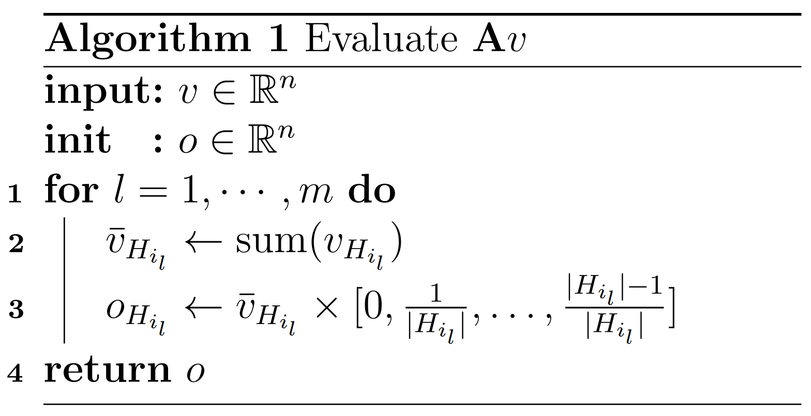
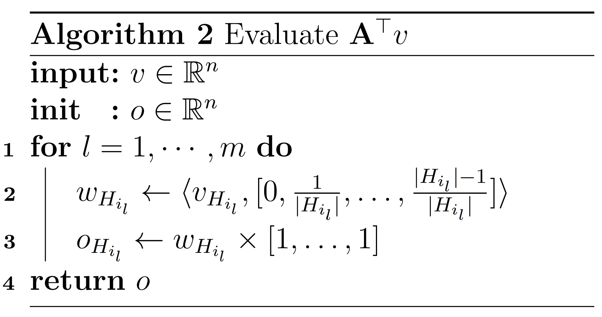
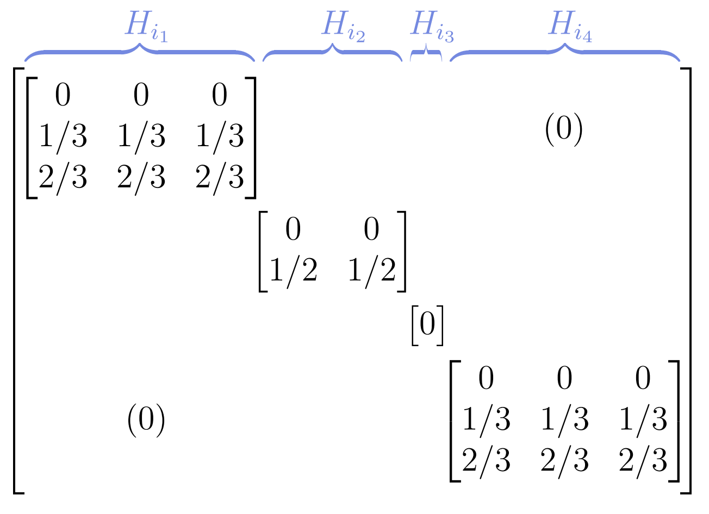

Mathematic behind Cox datafit¶
This tutorial presents the mathematics behind Cox datafit using both Breslow and Efron estimate.
Problem setup¶
Let’s consider a typical survival analysis setup with
`\mathbf{X} \in \mathbb{R}^{n \times p}` is a matrix of `p` predictors and `n` samples `x_i \in \mathbb{R}^p`
`y \in \mathbb{R}^n` a vector recording the time of events occurrences
`s \in \{ 0, 1 \}^n` a binary vector (observation censorship) where `1` means event occurred
where we are interested in estimating the coefficients `\beta \in \mathbb{R}^p` of the linear combination of predictors.
We will start by establishing the Cox datafit using the Breslow estimate then extend to the case of tied observations through the Efron estimate.
Breslow estimate¶
Datafit expression¶
To get the expression of the Cox datafit, we refer to the expression of the negative log-likelihood according to the Breslow estimate [1, Section 2]
To get compact expression, We introduce the matrix `mathbf{B} \in \mathbb{R}^{n \times n}` defined as `\mathbf{B}_{i, j} = \mathbb{1}_{y_j \geq y_i} = 1` if `y_j \geq y_i` and `0` otherwise.
We notice the first term in (1) can be rewritten as
whereas the second term writes
where the `\log` is applied element-wise. Therefore we deduce the expression of Cox datafit
We observe from this vectorized reformulation that the Cox datafit only depends `\mathbf{X}\beta`. Hence, we can focus on the function
to derive the gradient and Hessian.
Gradient and Hessian¶
We apply the chain rule to derive the function `F` gradient and Hessian. For `u \in \mathbb{R}^n`, The gradient is
and the Hessian reads
where the division and the square operations are performed element-wise.
The Hessian, as it is, is costly to evaluate because of the right hand-side term. In particular, the latter involves a `\mathcal{O}(n^3)` operations. We overcome this limitation by using a diagonal upper bound on the Hessian.
We construct such an upper bound by noticing that
the function `F` is convex and hence `\nabla^2 F(u)` is positive semi-definite
the second term is positive semi-definite
Therefore, we have,
where the inequality is the Loewner order on positive semi-definite matrices.
Note
Having a diagonal Hessian reduces Hessian computational cost to `\mathcal{O}(n)` instead of `\mathcal{O}(n^3)`. It also reduces the Hessian-vector operations to `\mathcal{O}(n)` instead of `\mathcal{O}(n^2)`.
Efron estimate¶
Datafit expression¶
Efron estimate refines Breslow by handling tied observations (observations with identical occurrences’ time). We can define `y_{i_1}, \ldots, y_{i_m}` the unique times, assumed to be in total `m` and
the set of uncensored observations with the same time `y_{i_l}`.
Again, we refer to the expression of the negative log-likelihood according to Efron estimate [2, Section 6, equation (6.7)] to get the datafit formula
where `| H_{i_l} |` stands for the cardinal of `H_{i_l}`, and `\#(i)` the index of observation `i` in `H_{i_l}`.
Ideally, we would like to rewrite this expression like (2) to leverage the established results about the gradient and Hessian. A closer look reveals what distinguishes both expressions is the presence of a double sum and a second term in the `\log`.
First, we can observe that `\cup_{l=1}^{m} H_{i_l} = \{ i \ | \ s_i = 1 \}`, which enables fusing the two sums, for instance
On the other hand, the minus term within `\log` can be rewritten as a linear term in `mathbf{X}\beta`
where `a_i` is a vector in `\mathbb{R}^n` chosen accordingly to preform the linear operation.
By defining the matrix `\mathbf{A}` with rows `(a_i)_{i \in [n]}`, we deduce the final expression
Algorithm 1 provides an efficient procedure to evaluate `\mathbf{A}v` for some `v` in `\mathbb{R}^n`.
{kind=link}
Gradient and Hessian¶
Now that we cast the Efron estimate in form similar to (2), the evaluation of gradient and the diagonal upper of the Hessian reduces to subtracting a linear term. Algorithm 2 provides an efficient procedure to evaluate `\mathbf{A}^\top v` for some `v` in `\mathbb{R}^n`.
{kind=link}
Note
We notice that the complexity of both algorithms is `\mathcal{O}(n)` despite involving a matrix multiplication. This is due to the special structure of `\mathbf{A}` which in the case of sorted observations has a block diagonal structure with each block having equal columns.
Here is an illustration with sorted observations having group sizes of identical occurrences times `3, 2, 1, 3` respectively
{kind=link}
Reference¶
[1] DY Lin. On the Breslow estimator. Lifetime data analysis, 13:471–480, 2007.
[2] Bradley Efron. The efficiency of cox’s likelihood function for censored data. Journal of the American statistical Association, 72(359):557–565, 1977.